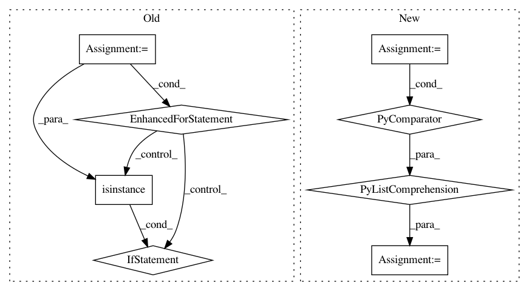

1f5bd7028636e6320079fc785c4aca9eda51defa,niftynet/utilities/util_common.py,,average_multi_opt_gradients,#Any#,43
Before Change
single_opt_multi_device_grad = list()
// iterate over the gradient dicts of all devices
for device_gradient in multi_device_gradients:
if not isinstance(device_gradient, dict):
tf.logging.fatal("gradient type miss match")
raise ValueError
if device_gradient.get(optimiser) is not None:
single_opt_multi_device_grad.append(device_gradient.get(optimiser))
averaged_gradients[optimiser] = average_gradients(single_opt_multi_device_grad)
return averaged_gradients
return average_gradients(multi_device_gradients)
After Change
optimiser_names = sorted(multi_device_gradients[0])
ave_gradients = dict()
for opt_name in optimiser_names:
multi_device_grad = [device_gradient.get(opt_name)
for device_gradient in multi_device_gradients]
ave_gradients[opt_name] = average_gradients(multi_device_grad)
return ave_gradients
// multi_device_gradients is a list of N device_gradients, for N devices
return average_gradients(multi_device_gradients)
In pattern: SUPERPATTERN
Frequency: 3
Non-data size: 8
Instances
Project Name: NifTK/NiftyNet
Commit Name: 1f5bd7028636e6320079fc785c4aca9eda51defa
Time: 2019-01-31
Author: wenqi.li@ucl.ac.uk
File Name: niftynet/utilities/util_common.py
Class Name:
Method Name: average_multi_opt_gradients
Project Name: keras-team/keras
Commit Name: 029461c7d1fe7a6927a6f9d0fa13dbf49543b413
Time: 2019-03-14
Author: abhai.dilip@gmail.com
File Name: keras/backend/cntk_backend.py
Class Name:
Method Name: batch_get_value
Project Name: chainer/chainercv
Commit Name: 324b7782f36d17aa0375b74bd0fc9c0f7bd037ee
Time: 2018-04-17
Author: Hakuyume@users.noreply.github.com
File Name: chainercv/chainer_experimental/datasets/sliceable/getter_dataset.py
Class Name: GetterDataset
Method Name: keys